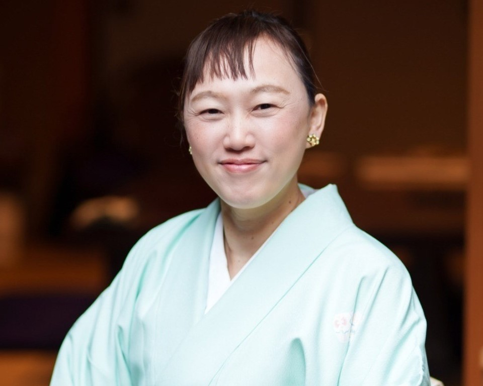
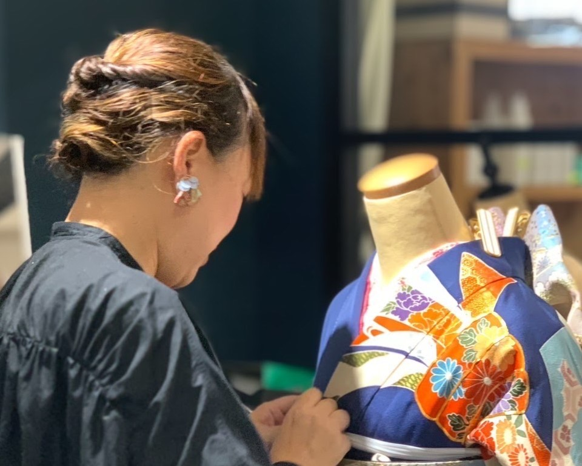

子育てしながら着付けを学びました
講師の西尾真樹子は、男の子ふたりの母親です
子どもが幼いころは専業主婦として家事と育児に専念していました。幼い子ども達との暮らしは、大変ながらとても充実していました。しかしその一方ではいつも、こどもが成長したあと私はどうしよう？と考えていました。子どもが巣立つときには、寂しく思うよりも「お互いに楽しく生きようね」と笑顔で送り出せるおかあさんで在りたいなと考えていました。その為にもなにか、私自身の楽しみや生き方を見つけたいなと探し続けていました。そんな模索のなかで、ずっと心の中にあったきものへの憧れに気づき、そこから少しずつ少しずつ学び今日にいたります。その蓄えてきた力がようやく皆様と分かち合えるまでに育ちました。
ご一緒にきもののある暮らしを楽しみませんか？

少しずつゆっくり学べます
家事やお子様のお世話で多忙な毎日。わずかな隙間の時間でも復習できるボリュームを考えて、少しずつゆっくりと丁寧に学んでいただきます。初めてきものを着る方、習ったことがあるけど忘れてしまった、という方でも安心です。

現役の着付け師です。
講師は現役の着付け師です。自身がきものを着るだけでなく、成人式や卒業式のお着付けも承っております。特別な道具を使わないお着付けです。